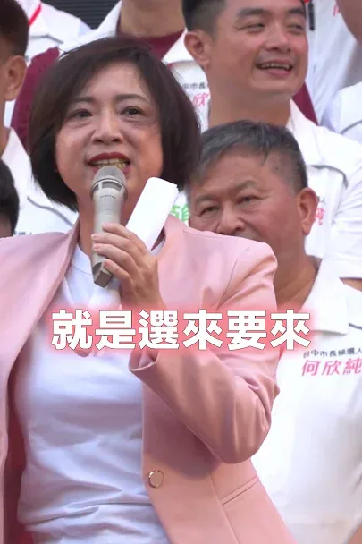
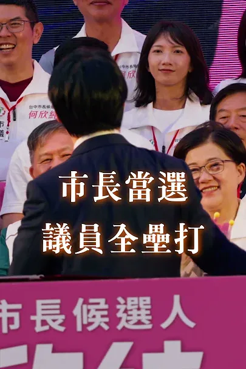
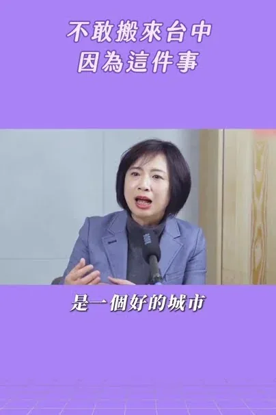
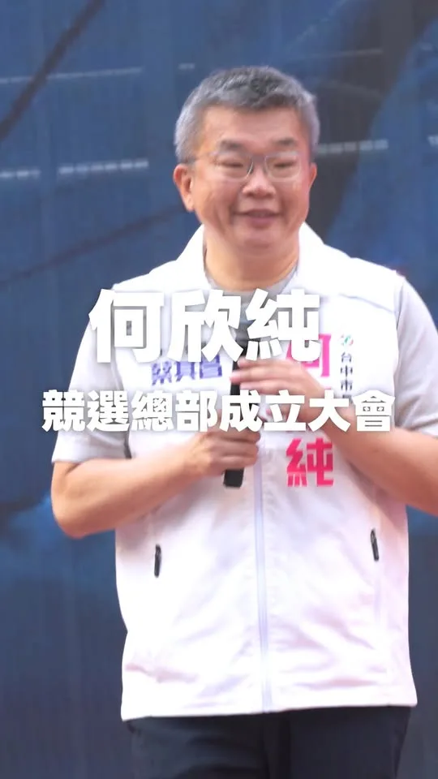

何欣純a-chun.tw
何欣純推屯區「五大進擊」 打造六星新屯區 台中市長候選人、立法委員何欣純今（18） […] 〈 何欣純推屯區「五大進擊」 打造六星新屯區 〉這篇文章最早發佈於《 何欣純官方網站｜2026 台中市長候選人 》。
Accounts
| 平台 | 帳號 | 已收錄貼文 | 最後更新 |
|---|---|---|---|
| 官網 | https://a-chun.tw/ | 43 | 2026-09-18 13:00 |
| https://www.facebook.com/94achun/ | 127 | 2026-09-17 20:12 | |
| https://www.instagram.com/a_chun1973/ | 90 | 2026-09-17 13:40 | |
| Threads | https://www.threads.com/@a_chun1973 | 150 | 2026-09-18 15:54 |
| YouTube | https://www.youtube.com/channel/UCFcDN6t7tJ7qObwtyBQHdRg | 153 | 2026-09-17 20:30 |
| LINE 官方帳號 | https://page.line.me/beu1231o | 0 | — |
Timeline
顯示 563 / 563 則
何欣純推屯區「五大進擊」 打造六星新屯區 台中市長候選人、立法委員何欣純今（18） […] 〈 何欣純推屯區「五大進擊」 打造六星新屯區 〉這篇文章最早發佈於《 何欣純官方網站｜2026 台中市長候選人 》。

@a_chun1973:明天見。

青年挺何欣純！打造青年局AI人才研習所 讓台中與國際接軌🤖🌏
@a_chun1973:台中需要的，是一個願意捲起袖子、真正解決問題的市長。 謝謝蔡其昌 @tsaimimi0416 主委的支持與鼓勵💪 我會繼續傾聽市民的聲音、回應城市的需要，一步一步把問題解決、把事情做好。 讓台中持續向前，為下一代打造更好的未來！

從獲得提名至今，300多天以來，我走遍大台中29個行政區，聽見鄉親對台中的期待，更加確定台中需要更大的格局。 因此，我提出「三個第一、一個大」： ✅ 軌道建設效率第一 ✅ 產業經濟發展第一 ✅ 全齡照顧品質第一 ✈️ 打造國際大機場 你的每一票，都是改變台中的力量。 讓我們一起，讓台中走向國際級的偉大城市！ #心存大台中 #市長換欣_台中創新 #首都格局_台中進擊
台中可以更好，何欣純要讓台中更安全！ 我當市長之後，我的首要之務，就是要翻轉大家對台中的負面印象！ 新台中，就交給何欣純！

為台灣拚外交，受國際敬重的蕭美琴副總統，就要來台中囉！ 何欣純邀請市民鄉親做伙相挺💪！為台中加油💪！ 🕤️時間：9／19（六）上午9：30 🌏️地點：大里新興宮（大里區新仁路2段162號
@a_chun1973:就在今天！ 我將前往大里仁化黃昏市場 台中純派們，待會見（招手
我知道大家敲碗很久了！ 何欣純第一波競選小物，今天正式登場啦～～ 這次推出 何欣純募款感恩小物【網路限定】，從台中隊球衣、應援巾到「台中純」網袋，通通準備好了💪 👕 A｜何欣純 TEAM TAICHUNG 球衣 捐款滿 3,000元 ➜ 限量台中隊球衣 1 件 🏃 B｜跑跑純應援巾 捐款滿 888元 ➜ 應援巾 1 條 🛍️ C｜台中純網袋 捐款滿 321元 ➜ 台中純網袋 1 個 ⭐ D｜何欣純募款感恩大全套｜限量200組！ 捐款滿 5,000元 ➜ ABC三款一次收藏，再加碼【官方「純」LOGO棒球帽】🧢 9/16～9/22網路期間限定，台中純派們別錯過啦喔！ 📌 小提醒： 球衣請於捐款備註欄註明 M、L、XL、2L、3L；小物將自 10/15起陸續到貨，並寄送至捐款收據地址。 純派大集合！點擊下方連結，趕快下手！ https://donate.ecpay.com.tw/home/2026achun/
青年圓夢、政府當後盾！何欣純推青年局、AI 研習所助就業創業 台中市長候選人、立法委員何欣純今（15） […] 〈 青年圓夢、政府當後盾！何欣純推青年局、AI 研習所助就業創業 〉這篇文章最早發佈於《 何欣純官方網站｜2026 台中市長候選人 》。

@a_chun1973:來到市場，除了看看新鮮蔬果，更期待的是和大家握握手、聊聊天，聽聽生活裡的大小事❤️ 我會繼續走進大台中的每一個市場，下一站，說不定就遇見你！

忠孝路夜市巧遇老字號青草茶！阿純一喝繼續活力滿滿🌿

蔡其昌總召喊話 台中需要改變！給何欣純一個解決問題的機會💪
@a_chun1973:第一波競選小物上線後，除了感受到大家滿滿的支持❤️ 也收到各種急迫的靈魂拷問： 「之前捐過可以補領嗎？」 「球衣尺寸忘記填怎麼辦？」 「我想要三個網袋可以嗎？」 特別整理出 「募款感恩小物 Q&A」，一次回答純派們最常問的問題。 謝謝大家這麼熱情支持，也謝謝大家這麼喜歡這次的小物❤️
亞洲台灣同鄉會訪台中 何欣純拋「三個第一、一個大」拚升級 台中市長候選人、立法委員何欣純今（16） […] 〈 亞洲台灣同鄉會訪台中 何欣純拋「三個第一、一個大」拚升級 〉這篇文章最早發佈於《 何欣純官方網站｜2026 台中市長候選人 》。
@a_chun1973:台中可以更好，何欣純要讓台中更安全！ 我當市長之後，我的首要之務，就是要翻轉大家對台中的負面印象！ 新台中，就交給何欣純！

@a_chun1973:為台灣拚外交，受國際敬重的蕭美琴副總統，就要來台中囉！ 何欣純邀請市民鄉親做伙相挺💪！為台中加油💪！ 🕤️時間：9／19（六）上午9：30 🌏️地點：大里新興宮（大里區新仁路2段162號

賴清德總統力挺何欣純 台中等太久了 我們一定要贏💪
我知道大家敲碗很久了！ 何欣純第一波競選小物，今天正式登場啦～～ 這次推出 何欣純募款感恩小物【網路限定】，從台中隊球衣、應援巾到「台中純」網袋，通通準備好了💪 👕 A｜何欣純 TEAM TAICHUNG 球衣 捐款滿 3,000元 ➜ 限量台中隊球衣 1 件 🏃 B｜跑跑純應援巾 捐款滿 888元 ➜ 應援巾 1 條 🛍️ C｜台中純網袋 捐款滿 321元 ➜ 台中純網袋 1 個 ⭐ D｜何欣純募款感恩大全套｜限量200組！ 捐款滿 5,000元 ➜ ABC三款一次收藏，再加碼【官方「純」LOGO棒球帽】🧢 9/16～9/22網路期間限定，台中純派們別錯過啦喔！ 📌 小提醒： 球衣請於捐款備註欄註明 M、L、XL、2L、3L；小物將自 10/15起陸續到貨，並寄送至捐款收據地址。 純派大集合！點擊下方連結，趕快下手！ ⬇️⬇️⬇️11:28準時開賣⬇️⬇️⬇️ https://donate.ecpay.com.tw/home/2026achun/
何欣純喊出「3個第一 1個大」台中要大升級💪

@a_chun1973:就在明天，星期六透早💗💗 蕭美琴副總統，就要來台中了！ 歡迎市民鄉親好朋友，給何欣純最大的鼓勵！！ 🕤️時間：9／19（六）上午9：30 🌏️地點：大里新興宮（八媽廟) 大里區新仁路2段162號

原本受邀到台中海線，為何欣純加油打氣的 蕭美琴 Bi-khim Hsiao 副總統，受到國際社會邀請，必須出國為台灣拚外交，所有鄉親都高度肯定支持！ 這個周六9/19，感謝美琴副總統，再次來到台中屯區，阿純誠摯邀請鄉親好朋友，作伙來給美琴副總統鼓勵、逗陣相挺何欣純、為台中加油！ 🕤️時間：9/19（六）上午9：30 🌏️地點：大里新興宮(八媽廟)大里區新仁路2段162號
台中需要的，是一個願意捲起袖子、真正解決問題的市長。 謝謝蔡其昌主委的支持與鼓勵💪 我會繼續傾聽市民的聲音、回應城市的需要，一步一步把問題解決、把事情做好。 讓台中持續向前，也為下一代打造更好的未來！
純派們的問題，我們都收到啦🙋 昨日第一波的募款感恩小物推出後，謝謝大家的熱情支持，也看到不少純派們對於小物領取、球衣尺寸、寄送時間、捐款方式等有一些疑問。 團隊特別整理了一份 「募款感恩小物 Q&A」，把大家最常詢問的問題一次整理清楚！ 再次謝謝每一位純派的支持與心意❤️ 更多相關消息，也會持續透過官方社群和大家報告！ ⬇️小英同款！競選小物連結如下，趕快點擊觀看⬇️ https://donate.ecpay.com.tw/home/2026achun/350041520260519092947 ＃市長換欣_台中創新

台中可以更好，何欣純要讓台中更安全！我當市長之後，我的首要之務，就是要翻轉大家對台中的負面印象！新台中，就交給何欣純！
何欣純募款小物登場！攜蔡其昌穿球衣、戴「純」字帽應援台中 台中市長候選人、立法委員何欣純今（16） […] 〈 何欣純募款小物登場！攜蔡其昌穿球衣、戴「純」字帽應援台中 〉這篇文章最早發佈於《 何欣純官方網站｜2026 台中市長候選人 》。

為台灣拚外交，受國際敬重的 蕭美琴 Bi-khim Hsiao 副總統，就要來台中囉！ 何欣純邀請市民鄉親做伙相挺💪！為台中加油💪！ 🕤️時間：9／19（六）上午9：30 🌏️地點：大里新興宮（大里區新仁路2段162號
@a_chun1973:我知道大家敲碗很久了！ 何欣純第一波競選小物，今天正式登場啦～～ 這次推出 何欣純募款感恩小物【網路限定】，從台中隊球衣、應援巾到「台中純」網袋，通通準備好了💪 👕 A｜何欣純 TEAM TAICHUNG 球衣 捐款滿 3,000元 ➜ 限量台中隊球衣 1 件 🏃 B｜跑跑純應援巾 捐款滿 888元 ➜ 應援巾 1 條 🛍️ C｜台中純網袋 捐款滿 321元 ➜ 台中純網袋 1 個 ⭐ D｜何欣純募款感恩大全套｜限量200組！ 捐款滿 5,000元 ➜ ABC三款一次收藏，再加碼【官方「純」LOGO棒球帽】🧢 9/16～9/22網路期間限定，台中純派們別錯過啦喔！ 📌 小提醒： 球衣請於捐款備註欄註明 M、L、XL、2L、3L；小物將自 10/15起陸續到貨，並寄送至捐款收據地址。 純派大集合！點擊下方連結，趕快下手！ https://donate.ecpay.com.tw/home/2026achun/

台中需要一個會捲起袖子、真正解決問題的市長。 謝謝蔡其昌主委的相挺，我會繼續傾聽市民聲音，解決城市問題，讓台中持續進步，給下一代更好的未來！ #心存大台中 #市長換欣_台中創新
台中要改變，就交給何欣純！💪 謝謝鄭麗君副院長的推薦與鼓勵❤️ 我會說到做到、兌現每一項政見，照顧每一位台中市民，也全力推動無人機與智慧產業發展。 讓產業升級、城市進步，讓台中再次起飛。